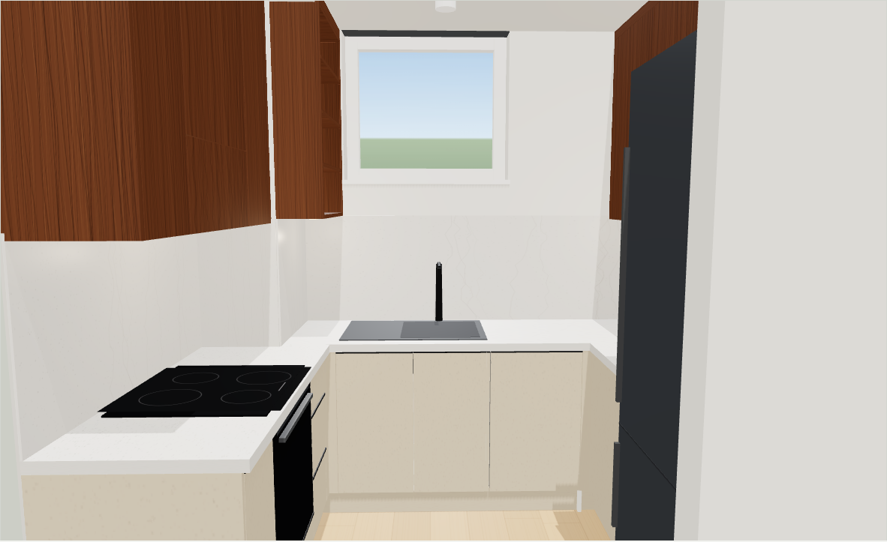
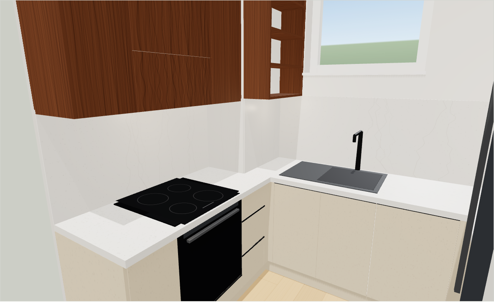
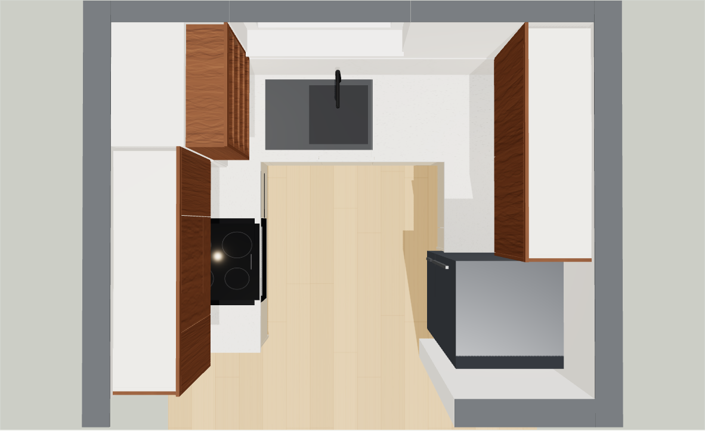
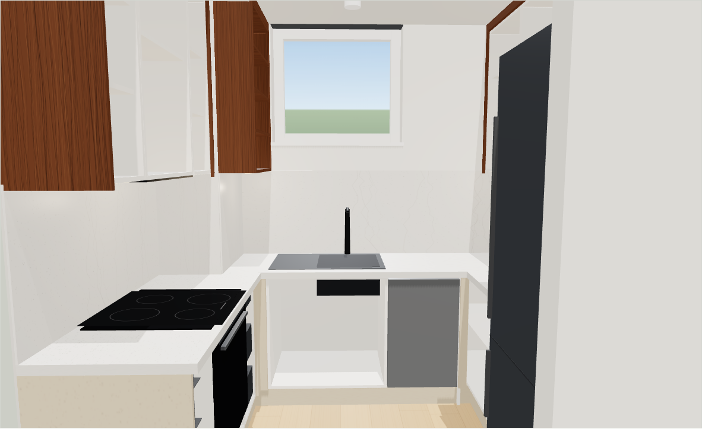
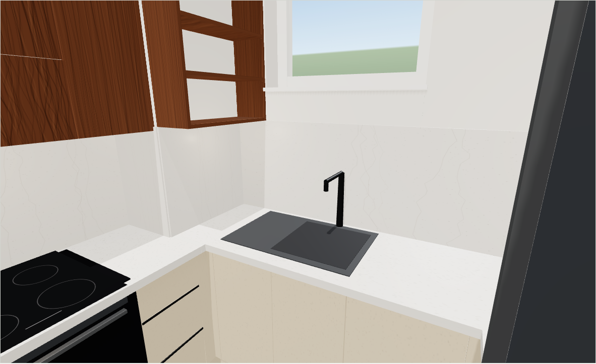
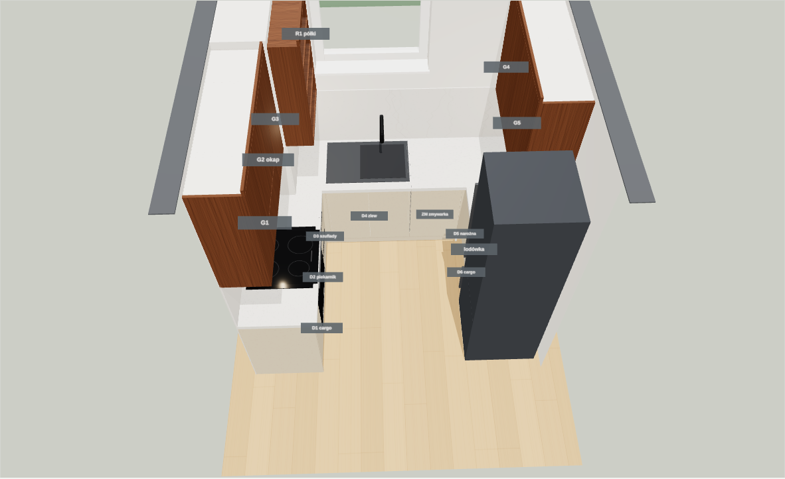
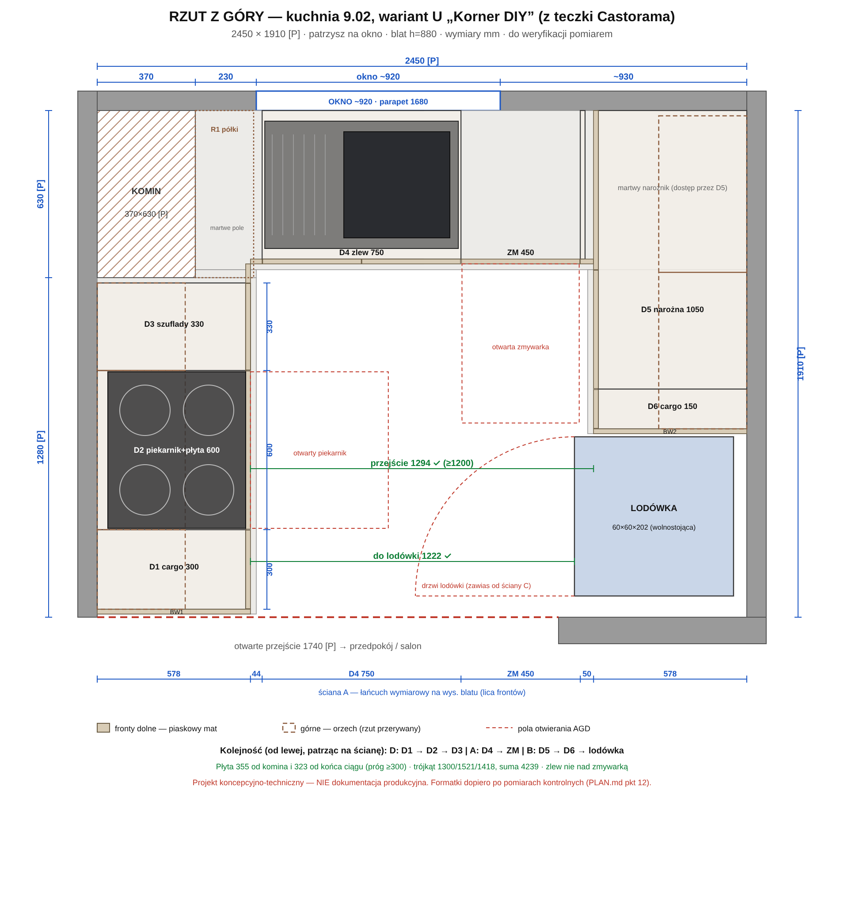
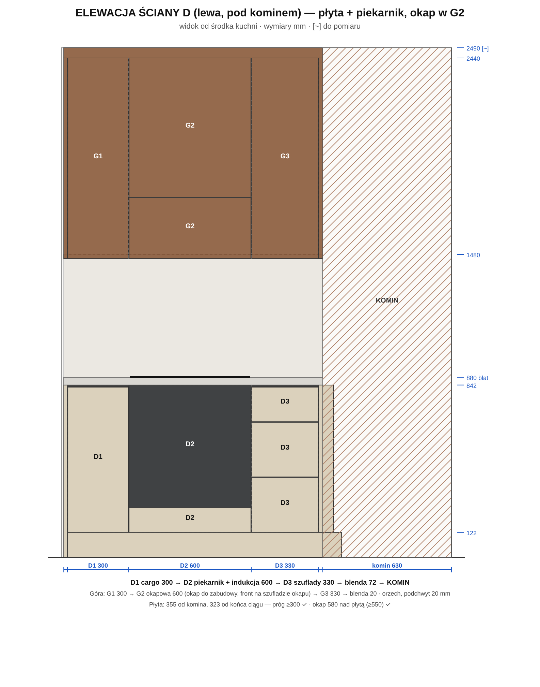
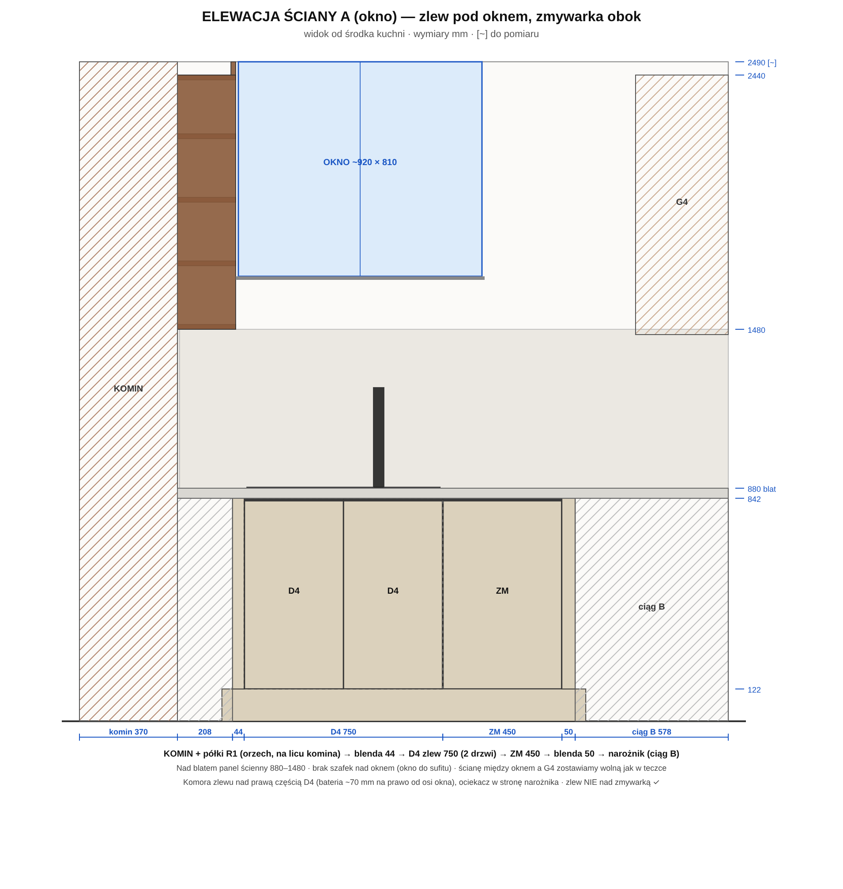
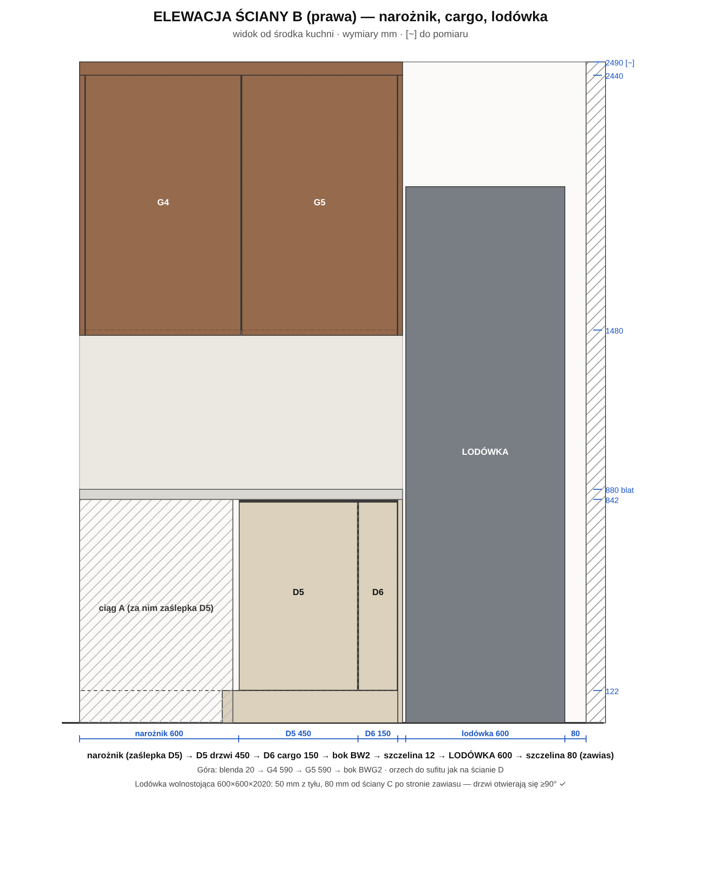

Układ i styl z teczki Castoramy (17.10.2026), przeliczone na wymiary z Twojego rzutu i rozpisane na szafki z płyt Korner (Piekary Śląskie / KornerGo). Fronty dolne piaskowe, matowe, bez uchwytów. Górne w orzechu, do sufitu. Blat i panel ścienny w jasnym kamieniu.






Teczka nie zawiera ani jednego wymiaru (rysunki są poglądowe, pomiar podał klient). Zestaw szafek z listy zakupów nie pasuje do pomieszczenia 2,45 m, więc układ U zachowałem, a szafki ułożyłem od nowa pod wymiar.
Castorama: zlew 80 + zmywarka 45 + dwie listwy narożne między ciągami bocznymi. To wymaga ok. 2,57 m ściany, a jest 2,45 m [P].
Zlew 75 + zmywarka 45 + blendy 44 / 50 mieszczą się. Przejście 1294 mm.
Na wizualizacjach Castoramy płyta grzewcza stoi tuż przy kominie. Próg bezpieczeństwa to co najmniej 300 mm od ściany bocznej.
Płyta przesunięta: 355 mm od komina, 323 mm od końca ciągu.
Komin 37 × 63 cm sięga od podłogi do sufitu. Szafki dolne nie mogą wejść w lewy narożnik.
Narożnik zamknięty blendami 72 + 44 mm. Na licu komina otwarte półki R1, mocowane głównie do ściany z oknem.
Castorama ma tylko gotowe szerokości (15, 40, 60, 80, 100 cm).
Z formatek Korner każda szafka ma swój wymiar: 300, 330, 750, 1050 mm.
| Nr | Szafka | Szer. × wys. × gł. [mm] | Front | Wnętrze / okucia |
|---|---|---|---|---|
| Ściana D (lewa, pod kominem), dół | ||||
| D1 | cargo przy przejściu | 300 × 720 × 560 | 1 front pełny | cargo 300 (oleje, przyprawy obok płyty) |
| D2 | piekarnikowa + płyta | 600 × 720 × 560 | szuflada niska ~120 | piekarnik pod blatem, nisza 560 × 590–600; płyta indukcyjna 60 |
| D3 | szufladowa | 330 × 720 × 560 | 3 szuflady | sztućce + 2 głębokie (prowadnice pełnego wysuwu) |
| BL1 | blenda narożna przy kominie | 72 × 720 | piaskowa | docinana na miejscu, za nią martwe pole |
| BW1 | bok wykończeniowy (od przejścia) | 578 × 842 | piaskowy | od podłogi do blatu |
| Ściana A (z oknem), dół | ||||
| BL2 | blenda narożna | 44 × 720 | piaskowa | docinana |
| D4 | zlewowa pod oknem | 750 × 720 × 560 | 2 drzwi 375 | zlew 1-komorowy z ociekaczem (komora z prawej), kosz na segregację, plecy serwisowe |
| ZM | zmywarka 45 do zabudowy | nisza 450 | front 450 na drzwiach zmywarki | woda i odpływ z D4; bok dystansowy BD 18 mm |
| BL3 | blenda przy narożniku | 50 × 720 | piaskowa | luz dla frontu zmywarki |
| Ściana B (prawa), dół | ||||
| D5 | narożna ślepa | 1050 × 720 × 560 | zaślepka 600 + drzwi 450 | półka; opcjonalnie półkosz narożny pod drzwi 450 |
| D6 | cargo wąskie | 150 × 720 × 560 | 1 front pełny | cargo 150 (jak w teczce) |
| BW2 | bok wykończeniowy (przy lodówce) | 578 × 842 | piaskowy | 12 mm szczeliny do lodówki |
| LOD | lodówka wolnostojąca | 600 × 2020 × 600 | — | 50 mm od ściany B, 80 mm od ściany C (strona zawiasu) |
| Góra: orzech, korpus 960 mm, dół na 1480, front 20 mm niżej (podchwyt zamiast uchwytu) | ||||
| G1 | wisząca | 300 × 960 × 332 | drzwi 980 | 2 półki, 3 zawiasy |
| G2 | okapowa nad płytą | 600 × 960 × 332 | drzwi ~680 + front szuflady okapu | okap do zabudowy 60 (recyrkulacja, dopóki nie znajdziesz kratki) |
| G3 | wisząca przy kominie | 330 × 960 × 332 | drzwi 980 | 2 półki |
| R1 | półki otwarte na licu komina | 630 × 960 × 220 | — | 2 boki + 5 półek z orzecha; wkręty do ściany A, w komin tylko kotwy płytkie 40–50 mm bez udaru |
| G4 | wisząca (ściana B) | 590 × 960 × 332 | drzwi 980 | 2 półki |
| G5 | wisząca (ściana B) | 590 × 960 × 332 | drzwi 980 | 2 półki |
Wysokości: cokół 122 · korpus 720 · blat 38 → blat na 880 mm (dla osoby 165–180 cm; przy innym wzroście 860 lub 910, zmienia się tylko cokół). To wymiary modułów, a nie formatki do cięcia. Formatki liczy się w e-Rozkroju dopiero po pomiarach.




| Pozycja | Ilość (szacunek) | Uwagi |
|---|---|---|
| Korner (płyty, korner.pl): rozkrój, oklejanie, akcesoria | ||
| Płyta korpusowa 18 mm, biała lub kremowa | ~4 arkusze 2800×2070 | netto ~14,8 m²; boki, wieńce, półki, bok dystansowy |
| Płyta frontowa: piaskowy mat | 1–2 arkusze | ~3,7 m²: fronty dolne, blendy, boki BW1/BW2, cokół. Dekor dobierasz z próbek w oddziale do weryfikacji |
| Płyta frontowa: orzech, słoje pionowe | ~2 arkusze | ~4,3 m²: drzwi górne, półki R1, boki, blendy do sufitu. Kolekcje drewnopodobne (Time of Oak / Woodstories) do weryfikacji |
| HDF 3 mm (plecy) | 1 arkusz | ~4,6 m² |
| Oklejanie ABS | ~120 mb | 2 mm na frontach i widocznych krawędziach, 1 mm na ukrytych, krawędzie przy ścianie bez oklejania |
| Blat laminowany 38 mm, jasny kamień | 4,0 m bieżące | 3 kawałki: A 2080, D 1298 (z wcięciem 370 × 30 przy kominie), B 618 · 2 złącza narożne · obrzeża na 2 końcach |
| Zawiasy z cichym domykiem 110° | 20 szt. | Blum lub Titus (partnerzy Korner), dostępność serii do weryfikacji |
| Szuflady (komplety prowadnic) | 4 | 3 × D3 (korpus 330), 1 × D2 pod piekarnikiem |
| Cargo | 300 + 150 | D1, D6 |
| Profil uchwytowy na górną krawędź frontów dolnych | ~4 mb | daje efekt „bez uchwytów” jak w teczce; alternatywa: Tip-On (wciśnij i otwórz) |
| Nóżki + klipsy cokołu · zawieszki + szyna · złącza, kołki, zaślepki | 26 · 10 + 2,5 m · kpl | |
| Poza Korner | ||
| Panel ścienny nad blatem (jasny kamień) | 2 szt. 600 × 3000 | 5,6 mb wystarczy na 2 panele, a Castorama liczyła 3. Jeśli Korner go nie ma, ten sam panel z Castoramy |
| AGD: płyta, piekarnik, zmywarka 45, okap do zabudowy 60 | — | teczka Castoramy też ich nie zawiera |
| Zlew, bateria, syfon, zawory · LED 3000K (ok. 3 m profilu + zasilacz) | — | |
Kwoty dla Korner to mój szacunek z cen rynkowych (np. biała płyta 18 mm w Castoramie: 37,98 zł/m²). Cennika Korner nie mam. Realną kwotę daje dopiero wycena e-Rozkroju po pomiarach. Największy wpływ mają dekor frontów i klasa okuć.
Projekt koncepcyjno-techniczny. Przed cięciem płyt trzeba go zweryfikować pomiarem na miejscu.